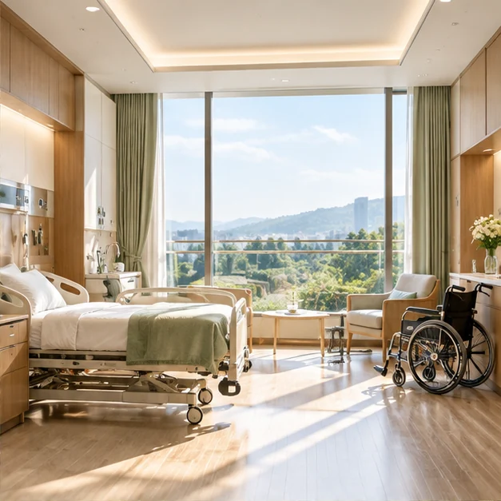
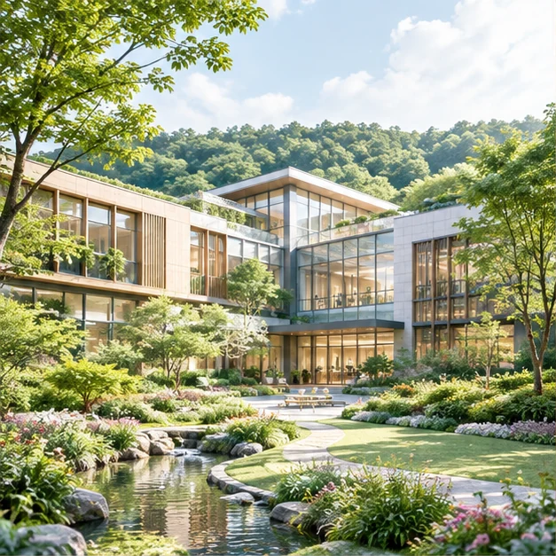
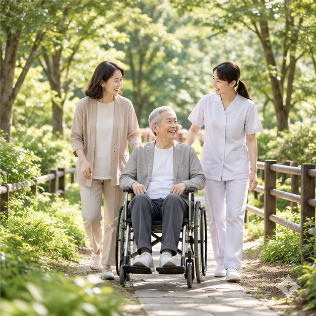

SPACES FOR WELLNESS머무는 시간도,
머무는 시간도,
회복의 일부이기에.
편안함은 세심한 디테일에서 시작합니다. 빛·동선·휴식·프라이버시를 함께 고려한 공간입니다.



※ 상단 시설 사진은 실제 더포레 건축·병실 촬영본이 아닌 AI 제작 시각화입니다.
VIRTUAL ROOM PREVIEW
시설 미리보기
실제 360도 실사 VR 촬영 데이터 연결 전, 병실과 재활센터를 이미지로 미리 살펴보는 데모입니다.
프리미엄 1인실 · 정적인 콘셉트 이미지입니다. 실제 360도 VR 촬영본은 추후 연동 예정입니다.
이동 편의
휠체어 접근, 침대 주변 여유, 손잡이 및 욕실 턱 등 실제 설계 단계에서 확인해야 할 항목을 안내합니다.
프라이버시와 수면
병실 채광, 시선 차단, 조도 조절과 면회 대기 공간 등을 고려한 설계입니다.